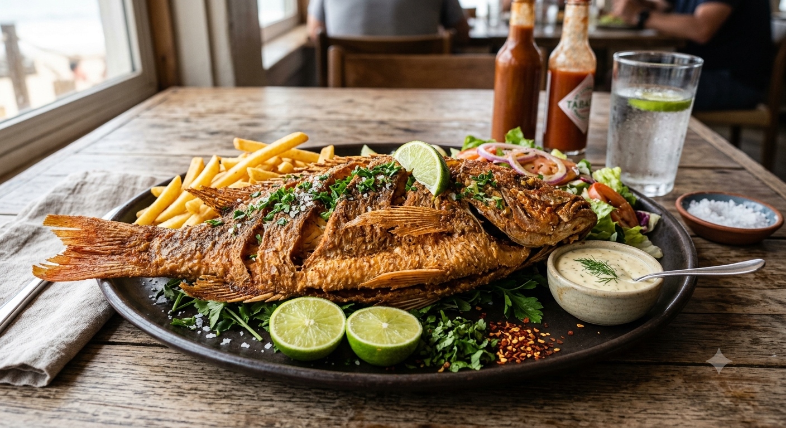

Pescado Frito

El pescado frito es uno de los platos costeros más populares y
queridos en todo el mundo. Esta receta te enseñará a prepararlo al
estilo tradicional, logrando que quede perfectamente dorado y
crujiente por fuera, pero muy jugoso y tierno por dentro.
Es el complemento ideal para acompañar con arroz, patacones o simplemente para
disfrutar solo con un toque de limón en una tarde con amigos.
Ingredientes
- Filetes de pescado fresco (la cantidad que te vayas a comer)
- Abundante aceite vegetal
- Sal al gusto
Pasos a seguir
- Limpiar y secar: Lava bien los filetes de pescado. Si
lo prefieres, puedes dejarlos enteros o cortarlos en trozos más m
edianos.
- Sazonar: Agrega sal al gusto por ambos lados de los file
tes de manera uniforme para que absorban bien el sabor antes de co
cinar.
- Enharinado: Pasa los trozos de pescado por una capa de h
arina o mezcla para rebozar, sacudiendo el exceso de almidón o har
ina. Esto ayudará a que queden más crujientes. Después, déjalos l
istos en un plato limpio.
- Calentar aceite: Calienta el aceite a una temperatura m
edia-alta (unos 180°C) y fríe el pescado durante unos
4-6 minutos hasta que esté dorado de un lado. No los muevas para q
ue no se rompan.
- Voltear y dorar: Da la vuelta con cuidado para que se co
cine el otro lado por unos 3 o 4 minutos más, hasta que esté bien do
rado y crujiente por fuera.
- Servir: Retíralos del aceite, escúrrelos
sobre papel absorbente, añade un toque de limón inmediatamente y sírve
los calientes.
Otras recetas